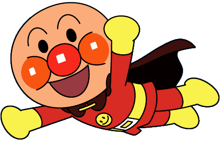
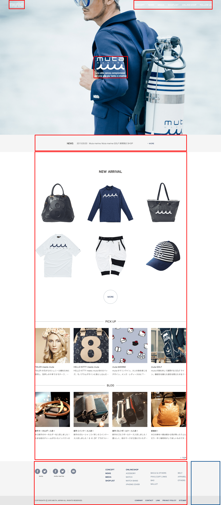

-
MOCK LESSON
-
はじめに
モックとは
モックアップ【mock-up】とは外見を実物そっくりに似せた模型のこと。 携帯電話は、外装と重さだけが再現され、画面はシールが貼ってある事が多い。 一方電子機器のモックアップは外装が省略され画面の動きだけが再現される。 また、サイト設計の際、簡易的なHTMLや専用ソフト等でデザイン＆インターフェースやリンク等も再現してあるものをモックアップと呼ぶことがある。 この場合はエクセルなどで作られるともあり、本物そっくりとまではいえないものもある。 ワイヤーフレームのことをモックアップと呼ぶ場合もある。 モックアップは用途によって様々な形態がある。
モックのメリット
・明確なビジョンを共有 → カンプでは伝わりにくい点を伝える
・動きを確認できる
・ビジュアルに華やかさを加える
個人的には。。。。
動きを伝えるという本来の目的はもちろん、
・カンプを150%の状態で再現して投げたい
・メインビジュアルで一山つくることで、少しマウンティングをとる
（この会社はすごいんじゃないか。。。的な）
などと考えながら作っていますが、それ以上に一番大きいメリットは
視線を散らすというところにあると思います。たとえば。。。
上のようなデザインを、この部分は実装時にアニメーションになりますと添えて投げるとします。
にも関わらずクライアントからは
・メインビジュアルのアンパンの顔の色をもう少しおさえてください。
・顔のまわりに白い線が入ってます消してください
・もう少し動きのあるデザインでお願いします
などという修正が山ほどくるのをよく見ます。
そこで下のようなモックで投げてみるとしますくるとしたら少しアンパンのスピードが速いとかそんな感じでしょう。
実装時に調整で、デザインOKです。
そんなにうまいこといかないですが、スライドで切り替わることで、どうしても間に合わなかった写真の補正のダメ出しくらいは軽減できるんじゃないかなと思います。
現状のデザイン出し
上記をふまえて、現状のデザインチェックの方法は。。。。
TOP(クリックで切り替え切り替え)
もしこうだったら。。。
TOP(クリックで切り替え切り替え)
あわよくばこうだったら。。。
TOP（スライドあり）
ということで今回はこの＜TOP（スライドあり）＞のモックを作成できるように資料を用意しました。 -
準備
テンプレートダウンロード
下記から、ZIPファイルをダウンロードして解凍してください DownLoad
ファイル構成
index.html
├ css
│ ├ designer.css
│ └ reset.css
├ js
│ ├ jquery.min.js
│ ├ jquery.easing.1.3.js
│ ├ common.js
│ └ slide.js
└ img
ファイル構成は上記になります。皆さんには青文字ファイル3点を触ってもらい、モックを作成していただきます。
-
作成手順
今回は以下の要素を基本として実装します。
実装時とは違い、モックの場合の手順となります。
・スライス
・HTML組み
・追従ヘッダー
・スライドショー
・タイトルのアニメーション -
スライス
スライスする要素
スライスは動かす箇所、距離感を再現する箇所、つながりを再現する箇所でできるだけ効率的にとります。このときセクションにテクスチャを使用している場合などは高さぴったりで背景（青線）のスライスも忘れないようにしましょう。
 -
HTML 1 - ヘッダー
HTML
<header> <div class="header_wrap"> <div id="logo"><img src="img/logo.png" alt="logo" title="" width="96" height="80"></div> <nav id="gnav"><img src="img/gnav.png" alt="gnav" title="" width="502" height="80"></nav> </div> </header>CSS
header { position: fixed; top: 0; left: 0; width: 100%; z-index: 3000; } header div.header_wrap { position: relative; width: 100%; top: 0; left: 0; margin-left: auto; margin-right: auto; overflow: hidden; } header div.header_wrap div#logo { float: left; display: block; margin-left: 60px; } header div.header_wrap #gnav { position: absolute; top: 0; right: 60px; display: block; }ヘッダーの配置にはポジションを設定します。
追従 → position: fixed;
追従なしでメインビジュアルの上に乗せる → position: absolute;
通常のブロック要素 → position: relative;
要素の全面・背面の設定はz-indexを使用します。
数字が大きければ大きいほど前面にきます。
※親要素に依存する。
このとき高さの指定をしなくていいように、ロゴやナビのスライスはヘッダーの高さぴったりがいいかも。
参考：
表示位置を変えたい！CSSでpositionの使い方
重ねて表示する！CSSのz-indexの使い方 -
HTML 2 - コンテンツ
HTML
<section class="content_01"> <img src="img/content_01.png" alt="content_01" title="" width="984" height="112"> </section> <section class="content_02"> <img src="img/content_02.png" alt="content_02" title="" width="984" height="2013"> </section>
CSS
section { width: 100%; } section.content_01 { background-color: #f5f5f5; } section img { margin-left: auto; margin-right: auto; }各セクションごとに素材を中央配置して、background-colorで背景色を敷きます。
-
HTML 3 - フッター
HTML
<footer> <div class="footer_wrap"> <img src="img/footer.png" alt="footer" title="" width="985" height="285"> </div> </footer>CSS
footer { width: 100%; } footer .footer_wrap { width: 100%; background-image: url(../img/bg-footer.png); background-position: 0 0; background-repeat: repeat-x; } footer .footer_wrap img { margin-left: auto; margin-right: auto; }コンテンツ部分同様、スライスした画像を中央配置しますが、DEMOのようにバイカラーや、テクスチャ背景の場合は、背景用にスライスした画像をbackground-repeatを使用して背景にします。
-
HTML 4 - メインビジュアル
HTML
<div id="mv"> <h1><img src="img/title.png" alt="title" title="" width="208" height="136"></h1> <div id="slide"> <div class="slide_wrap"> <ul> <li style="background-image: url(img/pic_01.jpg);"></li> <li style="background-image: url(img/pic_02.jpg);"></li> <li style="background-image: url(img/pic_03.jpg);"></li> <li style="background-image: url(img/pic_04.jpg);"></li> <li style="background-image: url(img/pic_05.jpg);"></li> </ul> </div> </div> </div>CSS
#mv { position: relative; width: 100%; } div#slide { position: relative; } div#slide div.slide_wrap { width: 100%; height: 100%; } div#slide div.slide_wrap ul { width: 100%; height: 100%; position: relative; } div#slide div.slide_wrap ul li { width: 100%; height: 100%; position: absolute; background-size: cover; background-repeat: no-repeat; background-position: center center; top: 0; left: 0; opacity: 0; z-index: 1000; transition: opacity 2000ms cubic-bezier(0.250, 0.100, 0.250, 1.000) 0ms; -webkit-transition: opacity 2000ms cubic-bezier(0.250, 0.100, 0.250, 1.000) 0ms; -moz-transition: opacity 2000ms cubic-bezier(0.250, 0.100, 0.250, 1.000) 0ms; -o-transition: opacity 2000ms cubic-bezier(0.250, 0.100, 0.250, 1.000) 0ms; -ms-transition: opacity 2000ms cubic-bezier(0.250, 0.100, 0.250, 1.000) 0ms; } div#slide div.slide_wrap ul li.on { opacity: 1; }スライド部分のHTMLです、実際にスライドする画像を背景画像として中央配置して、スライドします。
-
スライドの高さとインターバル
JS
var Slide = $("#slide"); var SlidePic = $(".slide_wrap li"); var SlideLen = SlidePic.length; var StarNum = 0; var SlideIndex = 0; var SlideTimer; // ******* スライドの高さを指定する（幅はcssで指定） var SlideH = "full"; // "full" or "ratio" or "num" // var SlideH = "full"; 画面サイズ // var SlideH = "0.5"; window高さの50%(0.5) // var SlideH = "500"; 500px ///AUTOSLIDE var AUTOSLIDE = true; //true or false var SlideInterval = 8000; //自動スライドの間隔 // *******スライドの速さはcssで ///SLIDECTRL var CTRL = false; //true or false var CtrlBtn; ///SLIDEARR var SLIDEARR = false; //true or false var slideArr, slideArrNext, slideArrPrev jQuery.event.add(window, "load", function() { if (CTRL == true) { CtrlInit(); } if (SLIDEARR == true) { ArrInit(); } SlideInit(); SlideIndex = StarNum; if(SlideLen > 1){ SlideSet(); } }); WIN.resize(function() { SlideInit(); }); function SlideInit() { if (SlideH == "full") { Slide.height(WinH); } else { if(SlideH <= 1){ Slide.height(WinH*SlideH); } else { Slide.height(SlideH); } } } function CtrlInit() { var CtrlHTML = "<ul class='ctrl'>" for (var i = 0; i < SlideLen; i++) { CtrlHTML += "<li><a href='javascript:void(0)'></a></li>"; } CtrlHTML += "</ul>" Slide.append(CtrlHTML) CtrlBtn = $('ul.ctrl li a') CtrlBtn.click(function() { clearTimeout(SlideTimer) var ctrlIndex = CtrlBtn.index(this) SlideIndex = ctrlIndex; SlideSet() }) } function ArrInit() { Slide.append("<a href='javascript:void(0)' class='slide_arr slide_prev'></a><a href='javascript:void(0)' class='slide_arr slide_next'></a>") slideArr = $('.slide_arr'); slideArrPrev = $('.slide_prev'); slideArrNext = $('.slide_next'); slideArrNext.click(function() { SlideNext(); }); slideArrPrev.click(function() { SlidePrev(); }); } function SlideSet() { SlidePic.removeClass('on'); SlidePic.eq(SlideIndex).addClass('on'); if (CTRL == true) { CtrlBtn.removeClass('on'); CtrlBtn.eq(SlideIndex).addClass('on'); } if (AUTOSLIDE == true) { SlideTimer = setTimeout(function() { if (SlideIndex < SlideLen - 1) { SlideIndex++; } else { SlideIndex = 0; } SlideSet() }, SlideInterval); } } function SlideNext() { clearTimeout(SlideTimer) if (SlideIndex < SlideLen - 1) { SlideIndex++; } else { SlideIndex = 0; } SlideSet() } function SlidePrev() { clearTimeout(SlideTimer) if (SlideIndex > 0) { SlideIndex--; } else { SlideIndex = SlideLen - 1; } SlideSet() }スライドに使用するjsです。黄色部分を編集してスライドの高さ、スライドの切り替わりのインターバルを設定します。
-
スライドのアニメーション
CSS
div#slide div.slide_wrap ul li { width: 100%; height: 100%; position: absolute; top: 0; left: 0; opacity: 0; z-index: 1000; transition: opacity 2000ms cubic-bezier(0.250, 0.100, 0.250, 1.000) 0ms; -webkit-transition: opacity 2000ms cubic-bezier(0.250, 0.100, 0.250, 1.000) 0ms; -moz-transition: opacity 2000ms cubic-bezier(0.250, 0.100, 0.250, 1.000) 0ms; -o-transition: opacity 2000ms cubic-bezier(0.250, 0.100, 0.250, 1.000) 0ms; -ms-transition: opacity 2000ms cubic-bezier(0.250, 0.100, 0.250, 1.000) 0ms; } div#slide div.slide_wrap ul li.on { opacity: 1; }transitionを設定して、スライドのスピード、スライド時のイージングを設定します。
DEMOではcubic-bezier(0.250, 0.100, 0.250, 1.000)のイージングで0秒の遅延（遅延なし）でopacityを2秒使って切り替える という設定になります。
参考：
transition
イージングCSS
div#slide div.slide_wrap ul li { width: 100%; height: 100%; position: absolute; top: 0; left: 0; opacity: 0; z-index: 1000; transition: all 2000ms cubic-bezier(0.250, 0.100, 0.250, 1.000) 0ms; -webkit-transition: all 2000ms cubic-bezier(0.250, 0.100, 0.250, 1.000) 0ms; -moz-transition: all 2000ms cubic-bezier(0.250, 0.100, 0.250, 1.000) 0ms; -o-transition: all 2000ms cubic-bezier(0.250, 0.100, 0.250, 1.000) 0ms; -ms-transition: all 2000ms cubic-bezier(0.250, 0.100, 0.250, 1.000) 0ms; transform-origin: center; -webkit-transform-origin: center; -moz-transform-origin: center; -o-transform-origin: center; -ms-transform-origin: center; transform: scale(1.02, 1.02); -webkit-transform: scale(1.02, 1.02); -moz-transform: scale(1.02, 1.02); -o-transform: scale(1.02, 1.02); -ms-transform: scale(1.02, 1.02); } div#slide div.slide_wrap ul li.on { opacity: 1; transform: scale(1, 1); -webkit-transform: scale(1, 1); -moz-transform: scale(1, 1); -o-transform: scale(1, 1); -ms-transform: scale(1, 1); }transformを使用すると2D変形3D変形を適用させることができます。
参考：
transform
-
タイトルアニメーション
HTML
<div id="mv"> <h1><img src="img/title.png" alt="title" title="" width="208" height="136"></h1> ・・・スライド省略 </div>JS
var BODY = $('body') jQuery.event.add(window,"load",function(){ CommonInit() BODY.addClass('load') });CSS
#mv { position: relative; width: 100%; } h1 { display: block; position: absolute; z-index: 3000; top: 50%; left: 50%; margin-top: -68px; margin-left: -104px; } h1 { /* transition: all "アニメーションの秒数"ms cubic-bezier("イージング") "遅延秒数"ms */ transition: all 1000ms cubic-bezier(0.455, 0.030, 0.515, 0.955) 1000ms; -webkit-transition: all 1000ms cubic-bezier(0.455, 0.030, 0.515, 0.955) 1000ms; -moz-transition: all 1000ms cubic-bezier(0.455, 0.030, 0.515, 0.955) 1000ms; -o-transition: all 1000ms cubic-bezier(0.455, 0.030, 0.515, 0.955) 1000ms; -ms-transition: all 1000ms cubic-bezier(0.455, 0.030, 0.515, 0.955) 1000ms; opacity: 0; transform: translate3d(0px, 20px, 0px); -webkit-transform: translate3d(0px, 20px, 0px); -moz-transform: translate3d(0px, 20px, 0px); -ms-transform: translate3d(0px, 20px, 0px); -o-transform: translate3d(0px, 20px, 0px); } body.load h1 { opacity: 1; transform: translate3d(0px, 0px, 0px); -webkit-transform: translate3d(0px, 0px, 0px); -moz-transform: translate3d(0px, 0px, 0px); -ms-transform: translate3d(0px, 0px, 0px); -o-transform: translate3d(0px, 0px, 0px); }DEMOファイルにはあらかじめ、ページロード時にbodyにloadというclassがつく設定になっています。
loadをトリガーとして、ロード時のアニメーションを発動させます。
-
おわり
今回はほぼスライド部分の見え方のモックでしたが、transformを適用させることで、いろいろな見せ方ができるのお時間あるときに試してみてください。基本のcssを駆使してざっくりとしたスライスで再現させ、動かしたいパーツを上に乗せて動かす。それだけでも少し見え方が変わるかと思います。
本当にいいモックを作れたらそれは理想ですが、目的はデザインしたものを強化して投げるというところだと思うので、自分たちのできる技術でまかなおうという気持ちがマイナスにはたらくこともあるかと思います。最高の形をイメージして、コーダーに相談していただければ一緒にモックを作ることも可能ですので是非ご相談ください◎